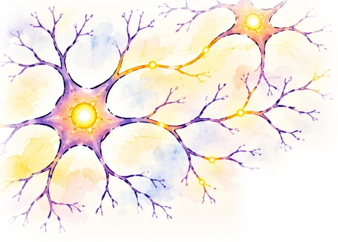

1
A remarkable network is taking shape
Researchers tell us
In the first years of life, the brain forms an extraordinary number of connections between neurons. As children grow, it strengthens the connections they use and removes others, a process called “synaptic pruning.” This makes its networks more specialized and efficient.
It doesn’t happen all at once. Areas for seeing and hearing mature early, while the areas for planning and self-control keep refining well into the teenage years.
Sources
- Huttenlocher, P. R. & Dabholkar, A. S. (1997). Regional differences in synaptogenesis in human cerebral cortex. Journal of Comparative Neurology, 387, 167–178.
- Stiles, J. & Jernigan, T. L. (2010). The basics of brain development. Neuropsychology Review, 20, 327–348.

A brain under construction.


 Listen to your lunch
Listen to your lunch Make a strange rainbow
Make a strange rainbow